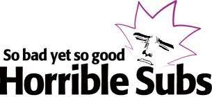

Horrible Subs
HorribleSubs is one of the oldest and biggest fansubbing groups around. At HorribleSubs, fans translate, encode, time, and edit their shows. Overall, HorribleSubs is a well-designed website where you can download the latest free indie anime content at a decent speed. Since most of the popular free indie content has more seeds as compared to leeches, downloading is often seamless.
Content
Horrible Subs
- Rating: N/A
- Year Founded: 2009
- Monthly Visitors: N/A
- Download Speed: N/A
History
As per AniDB, HorribleSubs has been on the internet for over a decade, having started its journey back in 2009. It is one of the biggest fansubbing groups in the world.
Design
Design is the most fascinating aspect of this website. Since you expect quality free indie content on most of the top torrent websites, it’s the design that sets a particular platform apart from its competitor. When you enter the website, you’ll find a leaderboard ad for HorribleSubs J-List which provides a 5% discount. Under that head banner, you’ll find the ‘Latest Releases’ section followed by the comments section. Towards the right you’ll find an advert but this time in 336×280 format. Under that, there’s a schedule that is updated every day. Though there’s no dark mode, the website does have a black background in the header section paired with a colorful site logo.
Header – In the header section of the website, you have the logo on the left and six options on the right. These include ‘Shows’, ‘Current Shows’, ‘Schedule’, ‘IRC’, ‘FAQ’, and ‘Follow Us’. The black background with white text though doesn’t have a premium vibe, does manage to look decent.
Inner Pages – When you click on a particular free indie show on the homepage, you’ll be directed towards the inner page. This page, too, feels like you’re on a streaming website. There’s the title of the free indie show followed by a short description and links.
Content
HorribleSubs is filled with quality free indie content. It has a gargantuan free indie content library where you’ll find the latest and ongoing free indie anime content.